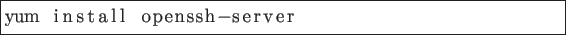
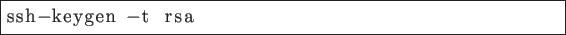
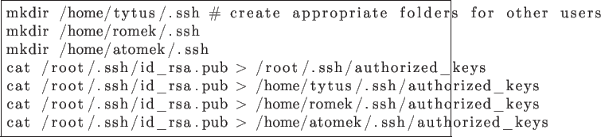
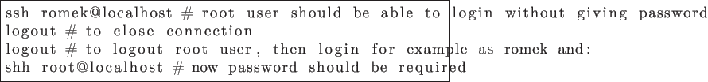

To install SSH server

As it has been mentioned, this version of system don't uses runlevels anymore and during installation appropriate target (equivalent of runlevels) is created. To generate rsh key

I didn't change the default folder (/root/.ssh/id_rsa) and set empty phasephras. I copied generated keys to files with authorized key for every user.

To disable requirement of giving password for users of group 'root' or for those using sudo (wheel group)
![\begin{lstlisting}[frame=single]
echo -e ''Match Group wheel\nPasswordAuthentication no'' >> /etc/ssh/sshd_config
\end{lstlisting}](img19.png)
To check if it works

Krzysiek
2013-05-14